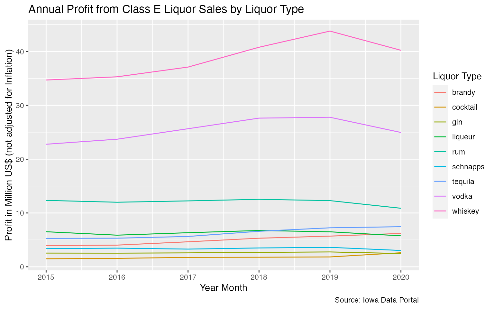
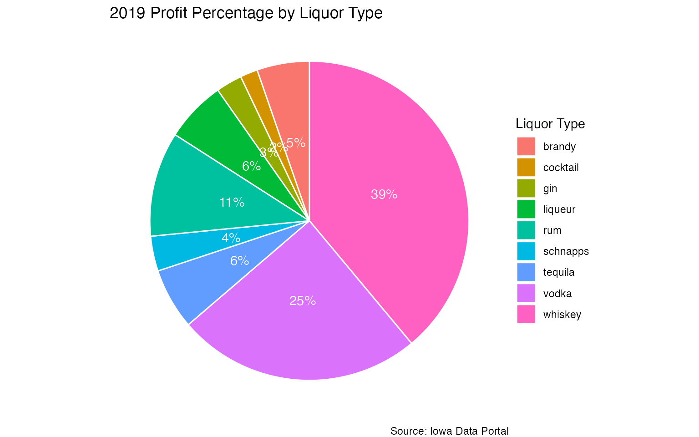
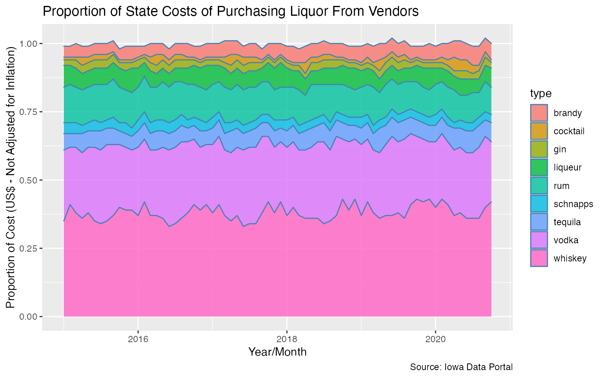

b_analysis.RmdThe {ialiquor} package provides a monthly summary Class E liquor sales in the state of Iowa by county or category between January 2015 and October 2020. This document is designed to demonstrate some potential use cases/analyses.
Let us quickly preview the main dataset. We will also store the dataset in a new variable called liquor for ease of use.
Let’s preview the sales by county:
dplyr::glimpse(liquor)
#> Rows: 280,736
#> Columns: 10
#> $ year <dbl> 2015, 2015, 2015, 2015, 2015, 2015, 2015, 2015, 2015, 2…
#> $ year_month <dttm> 2015-01-01, 2015-01-01, 2015-01-01, 2015-01-01, 2015-0…
#> $ county <chr> "adair", "adair", "adair", "adair", "adair", "adair", "…
#> $ population <dbl> 7145, 7145, 7145, 7145, 7145, 7145, 7145, 7145, 7145, 7…
#> $ type <chr> "vodka", "other", "liqueur", "cocktail", "liqueur", "gi…
#> $ category <chr> "100 proof vodka", "american alcohol", "american amaret…
#> $ state_cost <dbl> 253.62, 54.00, 88.98, 182.40, 346.29, 99.57, 257.72, 31…
#> $ state_revenue <dbl> 380.70, 81.00, 133.50, 277.10, 519.45, 149.38, 388.12, …
#> $ bottles_sold <dbl> 54, 6, 18, 26, 36, 24, 47, 5, 18, 36, 92, 633, 60, 25, …
#> $ volume <dbl> 58.50, 4.50, 19.50, 45.50, 27.00, 15.00, 34.00, 3.75, 1…The type column is a derived column (not found on the original dataset) that is a higher level grouping column for more specific types (i.e., categories) of liquor. For instance, amaretto is considered to be a liqueur and bourbon/scotch is just whiskey. It is important to keep in mind that this variable (type) is arbitrary and defined by the package author.
Luckily for us, all of variables in each of the datasets are coded correctly. Let’s focus on answering some of the key questions:
library(dplyr)
#>
#> Attaching package: 'dplyr'
#> The following objects are masked from 'package:stats':
#>
#> filter, lag
#> The following objects are masked from 'package:base':
#>
#> intersect, setdiff, setequal, union
library(ggplot2)
liquor %>%
group_by(year, county) %>%
summarize(
total_revenue = sum(state_revenue),
.groups = 'drop'
) %>%
ungroup() %>%
group_by(year) %>%
slice(which.max(total_revenue))
#> # A tibble: 6 x 3
#> # Groups: year [6]
#> year county total_revenue
#> <dbl> <chr> <dbl>
#> 1 2015 polk 63748123.
#> 2 2016 polk 65849029.
#> 3 2017 polk 70524272.
#> 4 2018 polk 78297082.
#> 5 2019 polk 82838081.
#> 6 2020 polk 73722537.It’s interesting to note that Polk county had the most revenue. Why is that? Let’s take a look at the top county for each year in terms of population
liquor %>%
group_by(year, county) %>%
summarize(
population = max(population),
.groups = 'drop'
) %>%
ungroup() %>%
group_by(year) %>%
slice(which.max(population))
#> # A tibble: 5 x 3
#> # Groups: year [5]
#> year county population
#> <dbl> <chr> <dbl>
#> 1 2015 polk 467304
#> 2 2016 polk 474277
#> 3 2017 polk 480487
#> 4 2018 polk 485833
#> 5 2019 polk 490161Seems as if Polk County is the largest county and it may be intuitive to assume that there are more persons buying liquor in this county.
So let’s look at revenue per person (based on population of the year), will we see different results?
liquor %>%
mutate(
rev_per_person = round(state_revenue / population , 2)
) %>%
group_by(year, county) %>%
summarize(
rev_per_person = round(sum(rev_per_person),2),
.groups = 'drop'
) %>%
ungroup() %>%
group_by(year) %>%
slice(which.max(rev_per_person))
#> # A tibble: 5 x 3
#> # Groups: year [5]
#> year county rev_per_person
#> <dbl> <chr> <dbl>
#> 1 2015 dickinson 233.
#> 2 2016 dickinson 243.
#> 3 2017 dickinson 244.
#> 4 2018 dickinson 254.
#> 5 2019 dickinson 273.Now this is interesting. Seems as if Dickinson county has the highest revenue per person. Keep in mind that the population values also represent individuals who are not of legal age to consume liquor (i.e., under the legal age of 21). Due to the large data size, this package does not contain the brand of liquor. However, this can easily be obtained via the Iowa Data Portal for further analysis.
Perhaps it is interesting to look at the profit to the state by type of liquor over time.
liquor %>%
filter(!type %in% c('beer','other','unknown')) %>%
mutate(
profit = state_revenue - state_cost
) %>%
group_by(year, type) %>%
summarize(
total_profit = sum(profit) / 1000000,
.groups = 'drop'
) %>%
ggplot(aes(x = year)) +
geom_line(aes(y = total_profit, col = type)) +
labs(
x = "Year Month",
y = "Profit in Million US$ (not adjusted for Inflation)",
title = "Annual Profit from Class E Liquor Sales by Liquor Type",
caption = 'Source: Iowa Data Portal',
color = 'Liquor Type'
)
From the chart above, we can see that whiskey, vodka, and rum account for quite a bit of profit for the state as compared to the other types of liquor. Anecdotally speaking, when I shop at my local liquor store, I do find many types of whiskeys. However, I’m surprised to see rum in the top three as I don’t see as many rum varieties as compared to tequila or liqueur.
Let’s focus on 2019 and see which types of liquor accounted for the vast majority. For this, we’ll make a pie chart. The conclusions may be similar to before, but in this case, we can see the impact of the different types for one year a bit more clearly.
profit <- liquor %>%
filter(!type %in% c('beer','other','unknown')) %>%
mutate(
profit = state_revenue - state_cost
) %>%
filter(year == 2019) %>%
group_by(type) %>%
summarize(
total_profit = round(sum(profit) / 1000000 , 0),
.groups = 'drop'
) %>%
ungroup() %>%
mutate(
pct = paste0((round(total_profit / sum(total_profit) , 2)) * 100,'%')
) %>%
arrange(desc(type)) %>%
mutate(lab.ypos = cumsum(total_profit) - 0.5*total_profit)
profit %>%
ggplot(aes(x = "", y = total_profit, fill = type)) +
geom_bar(width = 1, stat = 'identity', color = 'white') +
coord_polar("y", start = 0) +
geom_text(aes(y = lab.ypos, label = pct), color = 'white') +
theme_void() +
labs(
fill = 'Liquor Type',
title = '2019 Profit Percentage by Liquor Type',
caption = 'Source: Iowa Data Portal'
)
Last but not least, let’s take a look at the proportion of costs to the state. These are costs paid by the state to purchase the liquor from the appropriate vendors.
liquor_sales %>%
filter(!type %in% c('beer','other','unknown')) %>%
group_by(year_month, type) %>%
summarize(total_cost = sum(state_cost), .groups = 'drop') %>%
ungroup() %>%
group_by(year_month) %>%
mutate(
cost_pct = round(total_cost / sum(total_cost) , 2)
) %>%
ggplot(aes(x = year_month, y = cost_pct, fill = type)) +
geom_area(alpha = 0.8, color = 'steelblue') +
labs(y = 'Proportion of Cost (US$ - Not Adjusted for Inflation)',
x = 'Year/Month',
title = 'Proportion of State Costs of Purchasing Liquor From Vendors',
caption = 'Source: Iowa Data Portal')